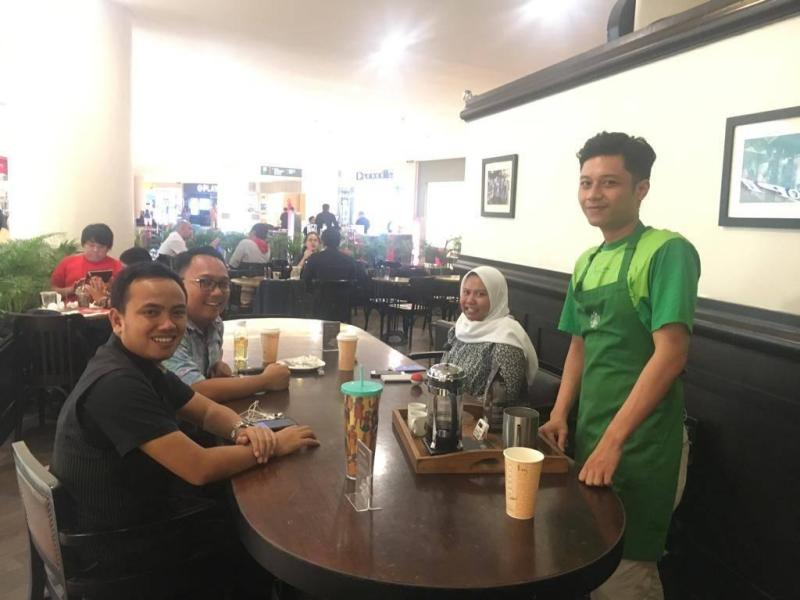
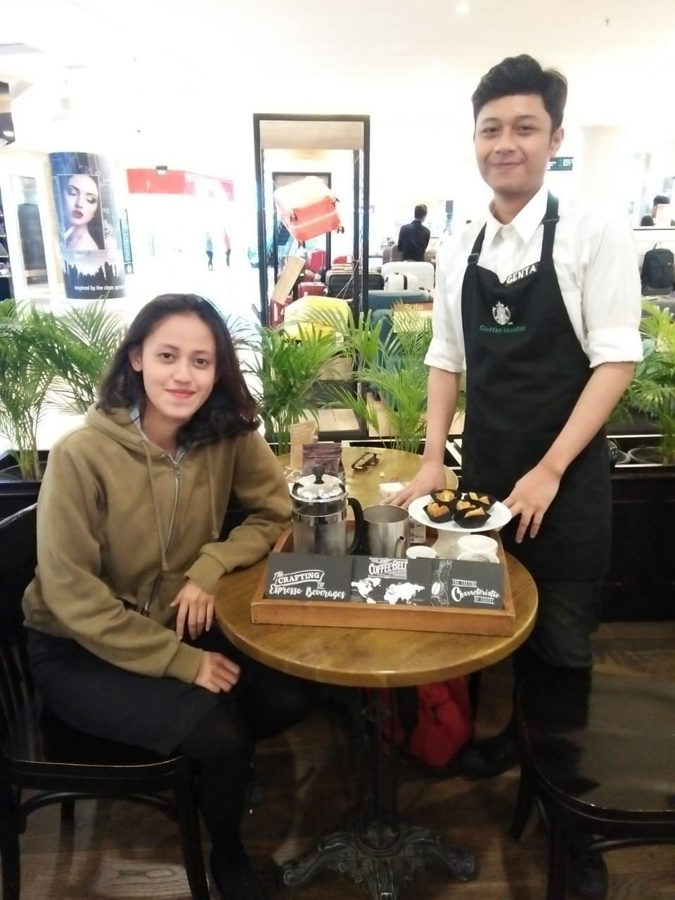
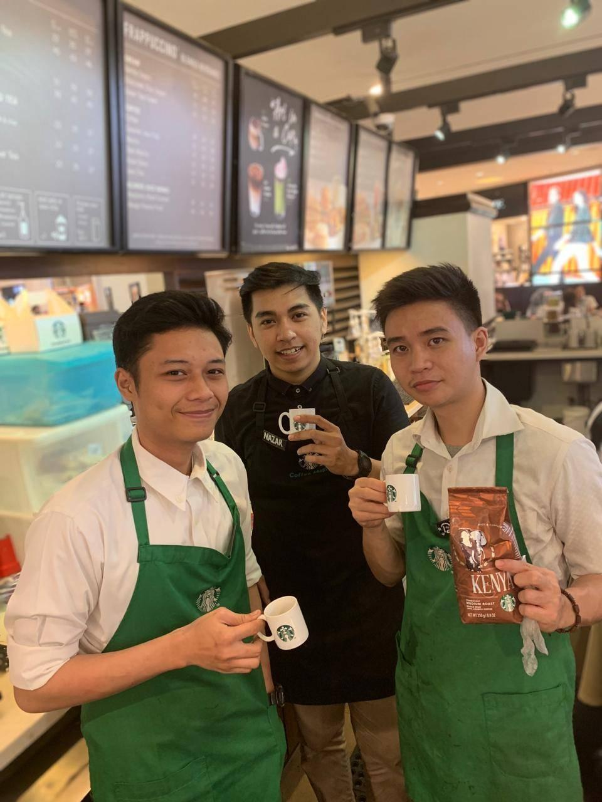
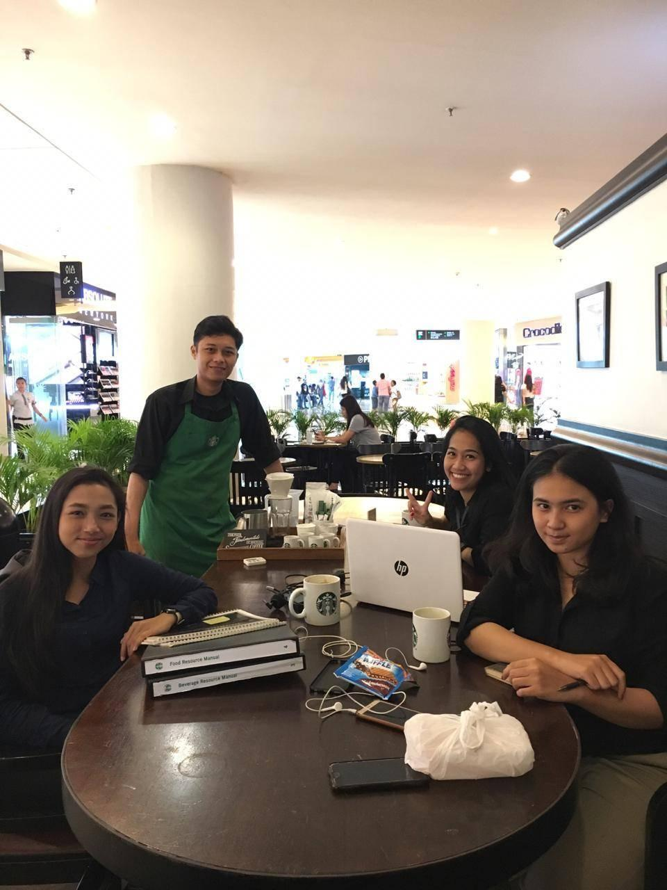
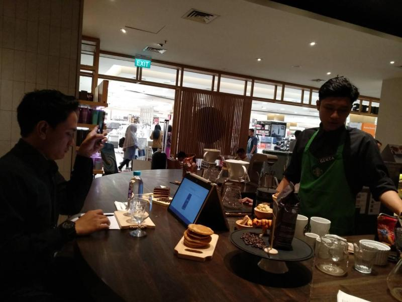
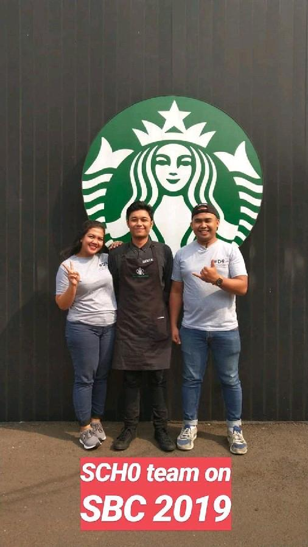

Role
- Serve customers with friendliness, manner, and decent coffee knowledge.
- Record daily food and merchandise inventory sold to be reported to the supervisor
- Handle and track payments as a cashier during the designated shift
- Creating starbucks experience to all customers where everybody is welcomed
- Encouraging and helping other baristas to improve their skills
Achievement
- May 2019 - Passed the coffee master training.
The training consists of modules such as history of coffee, coffee agriculture, coffee sourcing and buying, coffee roasting profiles, and coffee brewing learning
- Aug 2019 - Represented Starbucks Grand Indonesia 3 in Starbucks Barista Championship at the district level
Coffee Talk with Customers
I was showcasing how to make coffee with coffee press method to our customers. I was using Sumatran coffee beans in this picture.


Cofee Tasting with Partners
I was making coffee with pour over method while explaining the proportion, grind, water, and freshness of the coffee to other partners.
In the end, we reviewed each other's coffee in terms of aroma, body acidity, and flavor.


Coffee Master Conduct
Final assessment to become Coffee Master after finishing 5 chapter of Coffee Master training.

Starbucks Barista Championship 2019
Represented Starbucks Grand Indonesia 3 (SCH0) in Starbucks Barista Championship.
